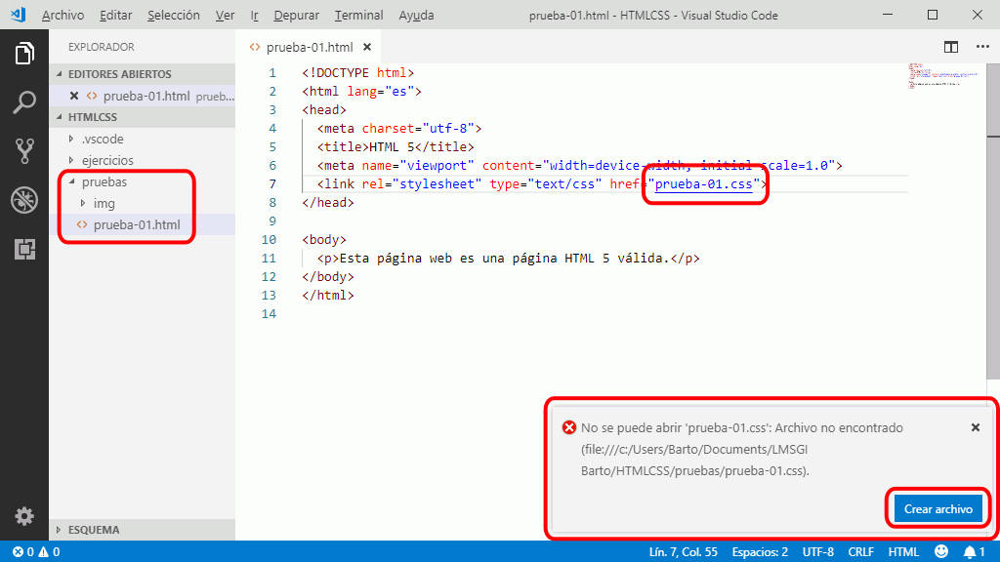

Interfaz de Visual Studio Code
Estos son los elementos principales del interfaz de Visual Studio Code:

Referencia: Visual Studio Code Docs: User Interface
Estos son los elementos principales del interfaz de Visual Studio Code:
Referencia: Visual Studio Code Docs: User Interface
Para abrir un documento enlazado, haga Ctrl+clic en la URL. Si es un documento local, el documento se abrirá en Visual Studio Code en una nueva pestaña. Si es un documento externo, el documento se abrirá en el navegador predeterminado.
Si el documento no existe, Viscual Studio Code ofrece la posibilidad de crearlo, como muestra el ejemplo siguiente.


El minimapa es una imagen reducida de la página web que se muestra en la parte derecha de Visual Studio Code y que permite desplazarse rápidamente a lo largo de un documento.
Si el documento no es muy largo (como ocurre en los ejercicios de este curso), el minimapa no resulta demasiado útil, pero ocupa espacio de pantalla.

Para ocultar (o mostrar si está oculto) el minimapa, elija la opción de menú :
Una vez oculto el minimapa, la ventana de edición se extenderá hasta el borde derecho:
Para formatear código, pulse el atajo de teclado Alt+Shift+f.
Referencia: Visual Studio Code Docs: Formatear fragmentos
Al pegar código, Visual Studio Code añade un sangrado que puede resultar molesto en caso de que un formateo automático posterior no lo corrija (por ejemplo, si el código pegado incluye un elemento <pre>.
La solución es pulsar Ctrl+z (deshacer) inmediatamente después de pegar el código. De esa manera se eliminará el sangrado añadido.
VSC issue #6392: Copy/Cut then Paste doesn't preserve or fix indentation
A veces el tamaño del sangrado no coincide con el establecido en la configuración.
Referencia: Pregunta en Stack Overflow